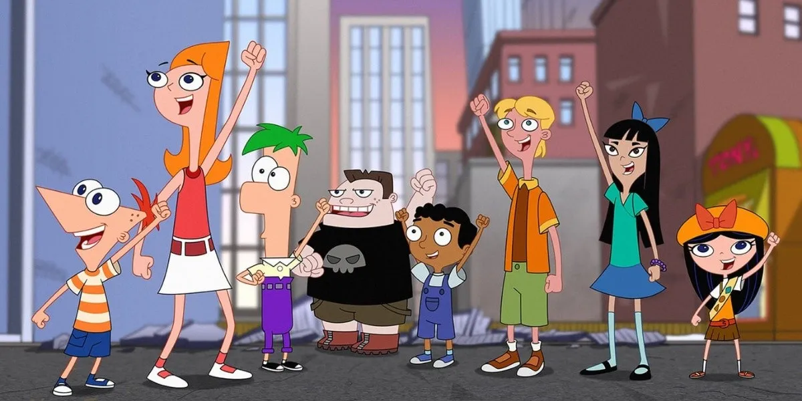

Phineas Flynn y su ingenioso hermanastro, Ferb Fletcher, están decididos a acabar con el aburrimiento y disfrutar de cada uno de sus 104 días de vacaciones de verano. Entre sus divertidos proyectos están la construcción de una montaña rusa a tamaño real, convertirse en la gran sensación de la música pop de un día para otro, la construcción de una playa en su patio trasero donde poder realizar competiciones de surf o un viaje en el tiempo a la época del Jurásico. En sus escapadas les acompaña Perry el Ornitorrinco, una mascota aparentemente boba que, sin que ellos lo sepan, tiene una doble vida. En realidad es el agente secreto P, que lucha hábilmente contra el malvado Dr. Doofenshmirtz para salvar el mundo. Mientras tanto, a su hermana mayor Candace le horrorizan las payasadas de sus hermanos y se dedica a delatarles a su madre y su padre, aunque nunca consigue pillarles con las manos en la masa.
La mayoría de los episodios tienen, como mínimo, un número musical. Aunque la serie se sirve un
poco de casi todos los géneros conocidos,
el más utilizado es el pop. El elemento musical es un añadido más que hace que esta serie de dibujos animados
sea entretenida para niños y
al mismo tiempo para adultos, pudiendo divertir y distraer a un amplio abanico de públicos.
Es una serie bien realizada, con unos diálogos originales y con un argumento fresco y divertido, a pesar de que
las historias se sostienen
sobre la misma base argumental: Phineas y Ferb se las ingenian para llevar a cabo un minucioso y alocado plan.
Actualmente es una de las
mejores series de animación que se emiten en la TDT, que puede hacer disfrutar tanto a los más pequeños como a
los mayores.
La serie está creada por Dan Povenmire ('Bob Esponja') y Jeff Marsh. Y los actores dobladores originales que ponen a voz a Phineas, Ferb y Candance son Vincent Martella ('The Walking Dead'), Thomas Brodie-Sangster ('Juego de Tronos') y Ashley Tisdale ('Scary Movie 5') respectivamente.

Phineas Flynn es, junto a Ferb (su hermanastro), uno de los personajes principales de la famosa serie de Disney Channel, Phineas y Ferb. Él además tiene amigos que siempre lo ayudan como Buford, Baljeet, e Isabella, quien tiene un secreto amoroso, es su "mejor amiga".
Last updated 3 mins ago

"Ferb" Fletcher es un niño británico que vive en la ciudad de Danville. Es muy callado, pero no es tímido, al contrario, Ferb es muy valiente e inteligente (tiene un CI muy elevado). Ferb piensa rápido y es un genio mecánico y técnico y ademas le gusta tocar la guitarra. Gracias a esto, él ha construido, junto a Phineas muchos proyectos. Se le conoce como "Un hombre de pocas palabras".
Last updated 3 mins ago

Candace Gertrude Flynn es una adolescente de 15 años de edad, es considerada una protagonista de la serie, ya que su actitud va en contra de las acciones de sus hermanos. Su día, por lo general, consiste en tratar de pillar a sus hermanos con los inventos que hacen cada dia, Linda Flynn; pero, en el momento en que llega a ver lo que están haciendo, todo está perfectamente normal.
Last updated 3 mins ago

Isabella García-Shapiro (con la voz de Alyson Stoner, en la versión original)es la
vecina de Phineas y Ferb,
siendo su mejor amiga.. También es la líder de las Exploradoras de la tropa 46231. Esta completamente
enamorada de Phineas Flynn.
«Hola Phineas, ¿qué están/estáis haciendo? »
−Isabella a Phineas
Last updated 3 mins ago

Vanessa Doofenshmirtz es la hija del malvado científico del área limitrofe, el Dr. Heinz Doofenshmirtz Es gótica y siempre viste de oscuro. Su objetivo es demostrarle a su madre que su padre es malvado, y también que Perry es un agente secreto , aunque su madre no le cree. Ferb está enamorado de Vanessa, aunque ella también tiene al parecer sentimientos amorosos por Ferb ya que las siguientes veces que lo ve le sonríe y al parecer coquetea.
Last updated 3 mins ago

Jeremy Johnson es el interés romántico de Candace y hermano mayor de Suzy. Tiene el pelo rubio, la estatura casi la de Candace y casi siempre esta en el señor sluchy debido a que el trabaja allí. Muchas veces que Candace no quiere atrapar a Phineas y Ferb, es debido que a Jeremy le gustan las construciones de ambos. En el futuro, será el esposo de Candace..
Last updated 3 mins ago

Linda Flynn-Fletcher es la madre de Phineas Flynn y Candace Flynn, y la madrastra de Ferb Fletcher. Está casada con Lawrence Fletcher, el padre de Phineas y Ferb. Ella es una madre estadounidense regular, a pesar de que toca en una banda de jazz de forma libre con la madre de Isabella y la madre de Jeremy Johnson.
Last updated 3 mins ago

Lawrence Fletcher es el padre de Ferb Fletcher y padrastro de Phineas Flynn y Candace Flynn. Él esta casado con Linda Flynn. Conoció a Linda Flynn en un concierto de Love Händel. Es de procedencia británica, es un antropólogo, cosa que se puede apreciar cuando expone sobre el bastón de Wiskershire, siendo interrumpido por Linda.
Last updated 3 mins ago

UEs una mujer de alrededor de 70 años, pelirroja, igual que Linda, Candace y Phineas. Usa unos anteojos negros, nunca se los saca exepto cuando se descubre que fue campeona de patinaje y muestra los ojos para enojarse con la abuela de Jeremy, quien hizo trampa en la carrera hacia años. En el flashback de la historia se la muestra joven y sin anteojos. Tiene ojos azules.
Last updated 3 mins ago

Clyde Flynn (nacida Johnson) es el abuelo de Phineas, Ferb y Candace, el marido de Betty Jo Flynn y el padre de Linda Flynn-Fletcher y Tiana Webber.Clyde Flynn vive en bosques de Danville y es el anfitrión de "Camp Phineas y Ferb"
Last updated 3 mins ago

Reginald "Reg" Fletcher es el padre de Lawrence Fletcher y vive en Inglaterra junto a su mujer, son los abuelos de Ferb, Phineas y Candace. Este señor británico, vive a las afueras de Londres con su mujer, Winifred Fletcher, y su hijo y nietos van a verle muy a menudo. En la versión original americana, Reg habla con acento Cockney y en inglés antiguo

Stacy Hirano es la mejor amiga de Candace Flynn, y de Jenny, aunque no tanto como de Candace. Normalmente habla con Candace por teléfono celular pocas veces esta en su casa. Ella es una compradora compulsiva y con poca capacidad de concentración, es muy cotilla se entera de todo lo que le pasa a Candace a través de sus amigos.
Last updated 3 mins ago

Buford Van Stomm es quien inventó las empanadas con pasas de uva, un asco, y un gran fan del anime de niñatas magicas. Suele unirse a las grandes ideas de Phineas y Ferb. También es porque le dejan jugar y participar en sus proyectos, por lo que trata bien a Phineas y Ferb.
Last updated 3 mins ago

Baljeet Rai es un chico de la india. Baljeet es el mas estudioso de los amigos de Phineas y Ferb. Por lo general suele estar acompañado de Buford, el cual suele agredirlo o molestarlo; pero a pesar de ello, ambos son muy buenos amigos. Baljeet suele ser bastante organizado y preocupado, como se ha visto en varios episodios y suele estudiar bastante.
Last updated 3 mins ago

Irving, es el mayor fan de los chicos desde el principio de la serie. Tiene un álbum lleno de fotos de los proyectos de Phineas y Ferb, incluso un mechón de cabello de Ferb. En su cuarto tiene muchas fotos pegadas de Phineas y Ferb y sus proyectos.Está loco por los inventos de Phineas y Ferb. Tiene una fuerte obsesión con ellos y tiende a exagerar las cosas.
Last updated 3 mins ago

Perry el Ornitorrinco, con nombre en código Agente P, es la mascota de Phineas Flynn y Ferb Fletcher, quien, desconocidamente por sus dueños y familiares, vive una doble vida como agente secreto para La Agencia, una organización del Gobierno Estadounidense de espías animales, sin un Buen Acronimo/sin un Acrónimo Chulo. En La Agencia su jefe, y comandante, es el Mayor Monograma.
Last updated 3 mins ago

Mayor Francis Monograma, (Mayor Francis Monogram en España y Major Francis Monogram en E.E.U.U.) es el Comandante oficial de la división de la OSAC/OSBA donde trabaja el Agente P; y le da sus misiones en cada episodio con la ayuda de Carl el Interno Doofenshmirtz le llama Mayor Monoceja.
Last updated 3 mins ago

Carl Karl es el cámara e informático de la Agencia, también es el ayudante del Mayor Monograma y un gran amigo suyo, este novato ingresó en la OSAC/OSBA para conseguir créditos universitarios. Carl es distraído y torpe, su falta de concentración le hace cometer errores. Carl es pedante, puntilloso, perfeccionista y, aunque es muy aplicado para los estudios, suele defraudar a su jefe..
Last updated 3 mins ago
Last updated 3 mins ago
Last updated 3 mins ago
Last updated 3 mins ago
Last updated 3 mins ago
Last updated 3 mins ago
Last updated 3 mins ago